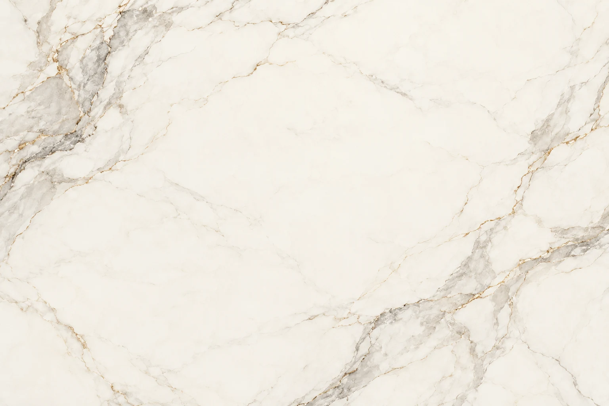

O cuidado tem nome e endereço.
Conheça o consultório Victória Vieira e encontre os canais para conversar sobre a sua visita em Tramandaí.
Victória Vieira.
Em Tramandaí.
Odontologia estética e humanizada em Tramandaí. Clínica, ortodontia e endodontia se encontram em uma proposta de cuidado voltada à pessoa.
Estamos no Centro de Tramandaí, na Rua Sahydi Abrahão, 175, sala 06. Conheça os cuidados, prepare suas perguntas e entre em contato.
Preparar a primeira visitaUm ponto de partida para cada dúvida.
Clínica, estética, ortodontia e endodontia para cuidar da sua saúde bucal. O atendimento e a indicação de tratamento são definidos em avaliação.
Os detalhes também comunicam cuidado.



Imagem 1 de 3
Vamos conversar sobre o seu cuidado?
Consulte a disponibilidade e esclareça as condições de atendimento com o consultório.